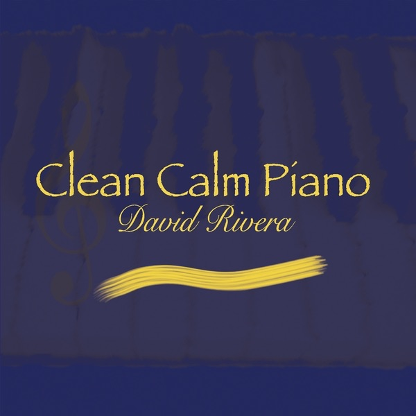

Clean Calm Piano
2010 · solo piano
A stormless sea, a window view, five minutes of calm. Fourteen pieces for a quieter hour. Stormless Sea is the door in.
I’m David Rivera. American neoclassical composer. Seven piano solo and ambient albums that fuse minimalism and electronica. The music is piano at heart. Subtle melodies for overlooked moments, sometimes with ethereal instruments, vocals, or synths. A place to slow down and take the time to listen.
I’m back at the instrument. Take these quieter pieces for now. New music is coming. Keep an ear out.
This page is only this album. If you want the album, press listen above.
The pieces
- Stormless Sea2:42
- Ocean Road3:03
- Window View4:01
- Introspection6:34
- Rainy Slumber3:45
- Lost Piano3:11
- Calm Afterwards5:49
- Smiling Moment1:49
- A Little Dance3:39
- One Distant Piano2:39
- Five Minutes of Calm5:17
- Innocence Regained2:54
- Misty Breeze4:36
- The Trembling Question3:38
The other albums
- Melodic Subtlety – Solo Piano (2006) · minimalist piano
- Piano In Colors (2007) · expressive neoclassical
- Tantalizing Proof (2009) · quiet, insistent piano
- Where In The World Is Diane (2012) · travel-inspired piano
- Smitten with the Muses (2014) · beguiling piano
- Piano Reveries and Phantasies (2015) · contemplative works
- Lackadaisical Perfection (2027) · neoclassical piano
New work